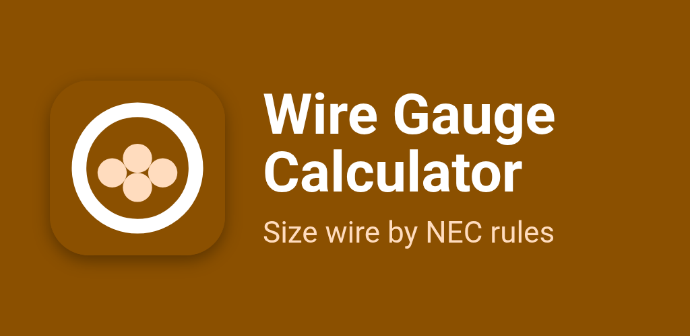
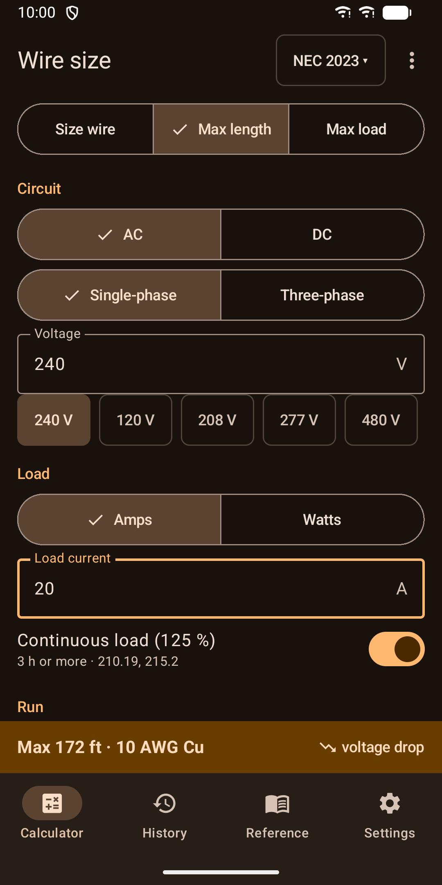
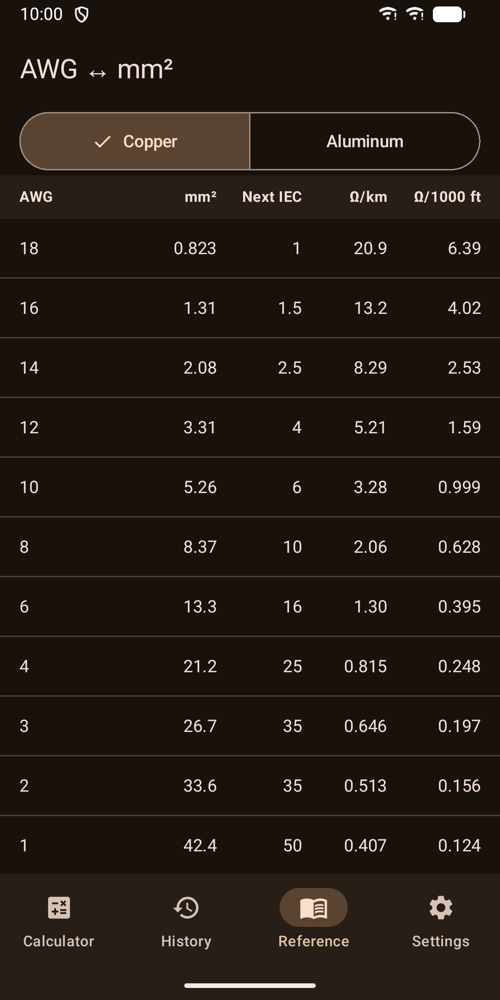
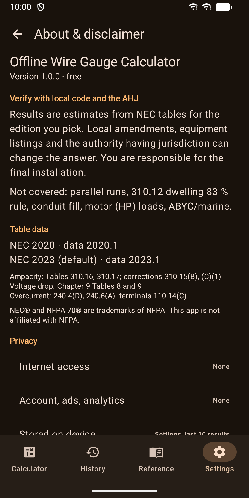

Kabelquerschnitt-Rechner: NEC
Leiterquerschnitt nach NEC: Strombelastbarkeit, Spannungsfall, Schutz







Über die App
Der Kabelquerschnitt-Rechner ermittelt den Leiterquerschnitt für einen Stromkreis nach NEC-Regeln für Strombelastbarkeit, Spannungsfall und Leitungsschutz. Jedes Ergebnis zeigt, welche Regel den Querschnitt bestimmt hat und aus welcher NEC-Tabelle und Ausgabe es stammt. QUERSCHNITT BERECHNEN ODER RÜCKWÄRTS RECHNEN - Querschnitt: Last, Leitungslänge und Bedingungen eingeben. Sie erhalten Leiterquerschnitt und Leitungsschutzschalter. - Max. Länge: Leiter wählen und sehen, wie lang die Leitung bei Ihrem Spannungsfall-Ziel sein darf. - Max. Last: Leiter und Länge wählen und sehen, welche Last höchstens möglich ist. AUF DER NEC AUFGEBAUT - NEC 2020 und NEC 2023. 2023 ist voreingestellt, die App merkt sich Ihre Wahl. - Strombelastbarkeit nach Tabelle 310.16 (Rohr oder Kabel) und Tabelle 310.17 (freie Luft). - Abminderung für Umgebungstemperatur und Anzahl stromführender Leiter. - 125 Prozent bei Dauerlast, Grenzwerte für kleine Leiter nach 240.4(D) und Anschlusstemperatur nach 110.14(C). - Nächste Standardgröße des Schutzschalters nach 240.6(A). Eigene Größe eingeben oder einen vorhandenen Schalter gegen den Leiter prüfen. - Spannungsfall nach Kapitel 9 Tabelle 9 für AC, mit Leistungsfaktor und Rohr aus PVC, Aluminium oder Stahl, sowie nach Tabelle 8 für DC. FÜR ELEKTRIKER, HEIMWERKER UND 12-V-/24-V-PROJEKTE - AC einphasig oder dreiphasig, oder DC mit Voreinstellungen für 12 V und 24 V. - Last in Ampere oder in Watt und Volt. - Kupfer oder Aluminium, 14 AWG bis 1000 kcmil. 18 und 16 AWG gibt es für DC. - THHN, XHHW-2, NM-B und weitere gängige Isolierungen, mit manueller Wahl der Temperaturspalte. - Fuß oder Meter, Fahrenheit oder Celsius. KLARE ANTWORTEN - Jedes Ergebnis nennt, was den Querschnitt bestimmt: Strombelastbarkeit, Spannungsfall, Schutzschalter oder Anschlüsse. - Jedes Ergebnis nennt Tabelle und Ausgabe der NEC. - Ergebnisse als Text teilen. - Der Verlauf speichert Ihre letzten 10 Berechnungen. Antippen öffnet sie erneut. - Ein Widget für den Startbildschirm zeigt die letzten 3 Ergebnisse. - Referenztabelle AWG zu mm2 mit Widerstand, berechnet aus öffentlichen Formeln. PRIVAT ENTWORFEN - Die App funktioniert ohne Empfang. Sie hat keine Internetberechtigung und fordert überhaupt keine Berechtigungen an. - Kein Konto, keine Analyse, kein Tracking. - Einstellungen und die letzten 10 Ergebnisse bleiben auf Ihrem Gerät. BARRIEREARM - Helles und dunkles Design folgen der Systemeinstellung. - Beschriftungen für Screenreader bei Bedienelementen und Ergebnissen. - Große Bedienflächen, Layouts für Smartphone und Tablet. NICHT ENTHALTEN Parallele Leitungen, die 83-Prozent-Regel für Wohnräume nach 310.12, Rohr- und Dosenfüllung, Motorlasten (PS) sowie ABYC- und Schiffstabellen. Die Ergebnisse sind Schätzwerte. Prüfen Sie sie immer anhand der örtlichen Vorschriften und der zuständigen Behörde (AHJ). NEC und NFPA 70 sind Marken der NFPA. Diese App steht in keiner Verbindung zur NFPA.